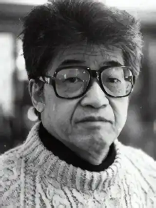

АБЕ КОБО(автонім: Кобо 7 марта 1924, — 22 января 1993) — японський письменник.Дитинство його минуло в Маньчжурії. У 1948 р. Абе закінчив медичний факультет Токійського університету. Кар'єрою лікаря знехтував, оскільки, як він якось висловився, "не створений для цієї професії, і почав писати ще студентом".
У 1948 р. з'явився журнальний варіант першого оповідання Абе "Дорожній знак у кінці вулиці" ("Оваріші міхі но шірубе ні"). Але великий успіх і популярність прийшли до нього у 1951 p., коли побачила світ повість "Стіна. Злочин Карума" ("S. Карумаші но ганзай"). За неї Абе був пошанований найвищою літературною нагородою Японії — премією Акутагави.
Науково-фантастична повість "Четвертий льодовиковий період" ("Даійон кампійокі", 1958), центральною темою якої є зображення роздвоєння особистості — цій самій темі присвячена повість "Майже як людина" ("Іші но ме", 1960) — остаточно переконала літературні кола у тому, що Абе притаманний великий талант. Уже перші твори підтвердили оригінальність його художньої манери: переплетення вигаданих і реальних пластів розповіді (цього Абе, за його власним зізнанням, вчився у М. Гоголя), динамічний сюжет, витриманий улусі детективу, тонкі філософські роздуми та символіка, сатиричність стилю та лапідарність мови. Вони виявляють і своєрідне кредо письменника, якому Абе залишиться вірним у подальшому: прагнути досліджувати не стільки побут і "болючі проблеми" суспільства, скільки "мозок і психологію", котрі так чи інакше визначають "спосіб дій". Особливий художній погляд Абе давав привід критиці у різні роки називати його то фантастом, то авангардистом, то японським Сартром, то японським Достоєвським. Роман "Жінка у пісках" ("Суна на онна", 1962), що здобув премію газети "Іомура", ознаменував початок романної творчості Абе. Авторська увага фокусується на процесі зміни психології, свідомості Ній — скромного вчителя, особистості досить ординарної. Мріючи у минулому хоча б чим-небудь прославитись, у теперішньому він несподівано опиняється разом із самотньою жінкою у полоні величезної піщаної ями. Герой, допомагаючи жінці щодня відгрібати з ями пісок, що загрожує впасти з морського берега на село і зруйнувати, засипати усі житла, постійно відчуває внутрішній дискомфорт: "Якщо щоразу рятувати ближніх, які помирають від голоду, ні на що інше часу не залишиться..." У стані безмежного відчаю, моральної та фізичної втоми він намагається втекти з цієї страшної пастки, але "думка його біжить назад". Герой, нехтуючи своєю свободою, повертається на дно жахливої ями. Довгі, втомлюючі душу роздуми про права особистості, закон в умовах нелюдського існування приводять його до відмови від свого "я", наближаючи тим самим до вселюдського "ми". "У піску разом з водою він ніби виявив у собі нову людину". Символічний і образ піску у романі. Для Нікі він — "сам рух". Герой роману "Чуже обличчя " ("Танін но као", 1964) — вчений, який ховає під маскою власне обличчя, спотворене внаслідок хімічного вибуху в лабораторії, проходить, на відміну від Нікі, "шлях відлюдькуватості", втрачаючи здатність до контакту з іншими людьми. Вивчаючи в ньому "розумовий механізм", "робота" якого й перетворила його у морального виродка, звільненого від "усіх духовних пут", Абе залишає зовні відкритим питання — хто винуватий у цьому? Проте багато чого вгадується у навмисній зашифрованості репліки героя, сказаній у фіналі роману: "Звинуватити одного мене не вдасться... Я ненавиджу людей". З нею вступає у своєрідний перегук морально-філософська думка роману "Спалена карта " ("Моетсукіта хізу", 1967). Спаленою виявилась "особиста карта" Тасіро — героя, охопленого духовною самотністю. Автор осмислює цю актуальну для суспільства проблему як покарання за свідому відмову людини від загальнолюдських ідеалів. У романі "Людина-ящик" ("Гако отоко", 1974), найпослідовніше у порівнянні з іншими витриманому в улюбленій письменницькій манері зображення взаємозв'язку вигаданого та реального світів, йдеться про людину, яка намагається сховатися від життя, від тотальної байдужості, що панує в ньому, "в ящику з гофрованого картону, який надітий на голову і доходить до пояса". Тут автор, продовжуючи художнє дослідження проблеми духовної самотності, збагачує її філософським відкриттям: врятувати Людину від цього кризового явища може лише саме Життя. У романі його уособлює образ Жінки. Саме до неї і звернені слова героя: "Єдине прохання — подай мені руку, поки ще я хочу взятий". Роман "Ті, що ввійшли у ковчег" (інша назва — "Ковчегсакури"'— "Гакобуне сакура мару", 1984) отримав досить полярні відгуки. Писали про те, що у ньому самотність, "роз'єднаність людська" "не досліджується, не аналізується, а з самого початку постулюється". Навряд чи це справедливо. Якщо розглядати роман у контексті всієї художньої творчості письменника, то слід зазначити, що він наче "зворотним світлом" освітлює попередні. Близький до них за манерою письма, цей роман "стягує" в єдиний вузол питання, що постійно хвилюють автора. Рішення Крота, головного героя твору, не думати більше про те, кому поталанить вижити, хто гідний вижити, прийняте після усіх фантасмагоричних подій, що трапились з ним у каменоломнях Ковчега (співзвучне нав'язливим думкам Нікі з "Жінки у пісках'), відображає авторську позицію у її взаємозв'язках з певними філософськими поглядами. На запитання "У чому сенс життя?" в одному зі своїх останніх інтерв'ю 1992 р. Абе відповів: "Ніякого сенсу немає, а є лише захопливий процес його вгадування". 22 січня 1993 р. Абе помер в одній із токійських лікарень, не встигнувши закінчити роботу над черговим романом. У Японії і за кордоном він відомий не лише як прозаїк, а й як автор гротескно-фантастичних п'єс: "Полювання на рабів"(1955), "Привиди поміж нас"(1958), "Легенда про велетнів" (1960), "Фортеця" (1962), "Мужчина, який перетворився у палицю" (1969). Свої п'єси Абе ставив у створеній ним "Студії Абе". Не все беззаперечне у творчому баченні Абе, але, як зауважив М. Федоренко, його твори "до певної міри можна вважати не просто замальовками, але монументальними полотнами епохи, що проминає"